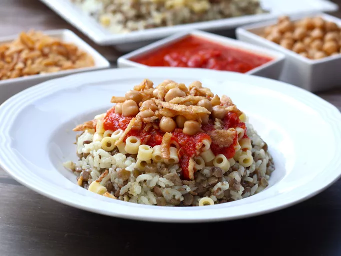

Koshary

Description
Koshary is pretty much Egypt's staple street food. You can find anything from a 2-story koshary restaurant to a man with a cart on the side of the street. It has no meat, but even the biggest of carnivores don't miss it.
Ingrediants
- 1 (14.5 ounce) can chickpeas (garbanzo beans), drained and rinsed
- ¼ cup red wine vinegar
- 1 teaspoon ground coriander
- 1 teaspoon ground cayenne pepper
- ½ teaspoon ground cumin
- ½ (16 ounce) package ditalini pasta
- 1 ½ cups short-grain rice, rinsed
- cold water, to cover
- 1 ½ cups dark brown lentils
- water to cover
- 1 pinch salt and ground black pepper to taste
- 1 tablespoon olive oil
- 1 yellow onion, minced
- 3 cloves garlic, minced
- 1 (14 ounce) can crushed tomatoes
- 1 tablespoon butter
- 3 cups chicken stock
- 1 (3 ounce) can French-fried onions
Steps
- Combine chickpeas, vinegar, coriander, cayenne pepper, and cumin in a resealable bag or container with a tight-fitting lid. Store in refrigerator while prepping remainder of dish, shaking occasionally.
- Bring a pot of lightly salted water to a rolling boil. Cook pasta in the boiling water until cooked through yet firm to the bite, about 8 minutes; drain and set aside.
- Combine rice with enough cold water to cover; allow to soak for 20 minutes. Drain.
- Meanwhile, combine lentils with enough water to cover in a pot; season with salt and pepper. Bring the lentils to a boil and simmer until tender, about 30 minutes. Drain.
- Heat olive oil in a saucepan over medium-high heat; cook and stir onion and garlic in hot oil until translucent, 5 to 7 minutes. Add crushed tomatoes; season with salt and pepper, reduce heat to medium-low, and maintain at a simmer while preparing remainder of dish.
- Melt butter in a pot over medium-high heat; add rice, increase heat to high, and fry for 4 to 5 minutes, stirring constantly. Pour in chicken stock and bring to a boil. Season with salt and pepper; reduce heat to low, cover, and cook until rice is tender, and the liquid has been absorbed, about 20 minutes.
- Mix rice and lentils together on a large serving platter. Spread cooked pasta over the rice and lentil mixture. Serve with marinated chickpeas, tomato sauce, and French-fried onions.